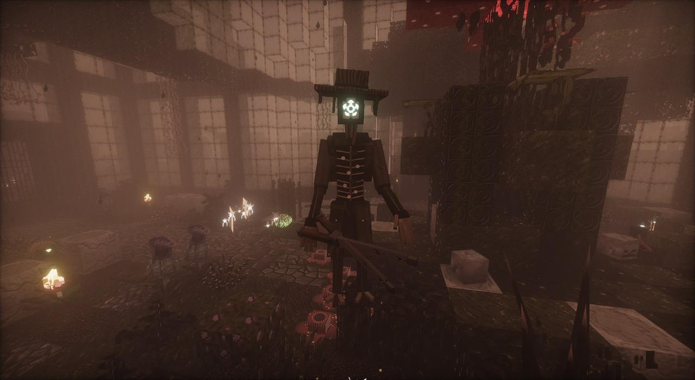

- Who he was
- E. Thorne, Head Gardener
- Size
- Over three blocks tall
- Health
- 420
- Wakes when
- You go too close to him or the flower, or strike him
- Drops
- The Gardener's Shears, the Heartbloom, a handful of Knotted Roots, bone meal, moss, weeping bells and rare seeds. His head on the first kill.

Description
The Head Gardener who tended the great flower so long it grew into him. He kneels at it under the dome with a root running from its heart into his face, in a rotting coat and a wide straw hat, a pale flower with an eye in it where his face was. His chest is a cage of root ribs with a heart beating inside, moss and little flowers growing in it. His left arm is a root. He carries rusted hedge shears as long as a man, in both hands, one on each long handle.
Waking him
He doesn't notice you at first. Walk softly. Go too close to him or to the flower, or strike him, and he tears loose and stands, and the gates slam shut behind you. They can't be broken while he lives, not even in Creative. Before you wake him, find his clothes (the hat and boots in the potting shed, the coat and breeches in his office). You'll want them later.
How he fights
Phase one
- Snip: the shears turned on their side, jaws flung wide, a lunge, and they bite shut. You bleed.
- Scissor and Thrust: a double snip, and the shears couched at his hip like a spear.
- Prune: wound out to his right and swept all the way round, throwing you back.
- Whirl: held out level at arm's length as he spins.
- Lash: his root arm whips out and drags you in to the shears. Don't stand too far off.
- Sow: seeds flung out of his coat pockets that burst up as thorns under you. Step off the ground where earth bubbles.
- Impale: the shears raised before his face, points down, and driven into the floor.
The overgrowth
At half his health he drives the shears into the ground on one knee and the glasshouse answers him: every burstpod near him goes off, petals rain, his face opens wide. He can't be hurt while it does.
Phase two
- Pollen: a choking cloud breathed out of the flower. Blinds, poisons and sickens. Stay out of it.
- Roots: the shears driven point-down into the floor, and lines of thorns race along the ground at everyone at once. Keep moving across them.
- The Call: the shears raised high and wide open, a shriek, and his children come up out of the earth round you.
Rootlings
Knee-high things with a pale bulb for a head, red pinprick eyes and a grin of thorns. They chatter, leap at you, and burrow away to come up somewhere else. Kill them. They drop Knotted Roots.
How to survive him
- He is slow and huge. Keep out of reach of the shears, but not so far that he lashes you in. Watch for his arm going back.
- Thorns come up where the ground stirs and earth bubbles. Step off it.
- If everyone inside leaves or dies, he goes back to his flower, healed, and the gates open again. You can retreat, but you start over.
His end
He drops his shears, goes down on his knees, his flowers wilt, and he bows. The great flower drags him in and eats him, and dies with him, its heart dried to a dead knot. He leaves the Gardener's Shears (Prune: full swings snip twice, and whatever is badly hurt is cut half again as hard; use them to drive a row of thorns toward what you face) and the Heartbloom, all that was left of the flower's heart: eat it and you are made whole, hardened and healing, and everything green round you flowers.
Three days later, the flower turns out not to be dead. See the green rift. And in chapter four the Bloom gives him back: the Gardener, Reborn.
Turned
Since 1.51.0 the parasite can take him. Turned, he's the Gardener, Overgrown. The Projectionist's reruns bring back his ring of thorns, and the Hub's replay portal for Act Two brings him back for another go.
Field notes
His journal is on the lectern in his office; his under-gardener T. Avery's ledger is in the Seed Vault. Both are on the lore page.
I hear it say my name through the lilies. It says it needs tending.
It is right. Somebody must tend it. I am going to kneel by it a while. Just a while.
If you find this: do not wake me. Do not touch the flower.
The last page of E. Thorne's journal.